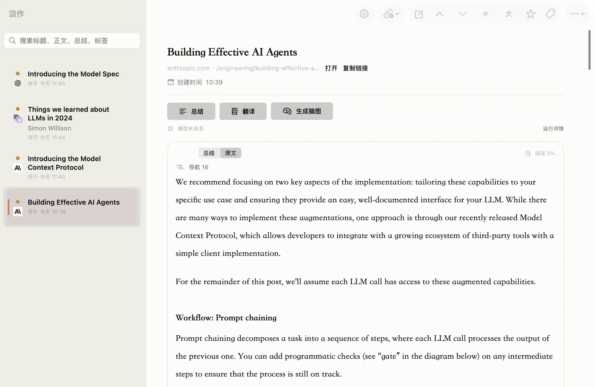

抓取正文
粘贴链接，或从浏览器一键发送当前页面。只取正文，不要广告和导航。
存下一篇文章只要一秒，读完它要二十分钟——差距就是这么攒出来的。
汲作抓下正文，用你自己的模型做成总结、译文和脑图。资料库默认保存在这台电脑上。
macOS 15 及以上 · 无需注册、无需账号 · 三个安装包怎么选

丢给聊天窗口、存进云端笔记、装一堆插件——这三件事它都换了个做法。
软件免费开源，不含 AI 额度也不代收费用。你用自己的 API Key，按实际用量直接结算给服务商，中间没有人抽成。
正文、总结、译文、脑图和标签都写在你电脑上的本地数据库里。没有账号，没有服务器；当前打开的单条记录可以导出带走。
同一条链接，总结、逐段译文对照、原文和脑图一次做完，视频还能先转写再走同一套流程。不用在四个工具之间来回倒。
一条链接进去，一份能带走的东西出来。
粘贴链接，或从浏览器一键发送当前页面。只取正文，不要广告和导航。
用你自己配置的 AI 服务处理。长文自动拆片并行翻译，不必干等。
把总结变成结构图。可换主题、可编辑、可导出 SVG，不再消耗额度。
B 站、抖音、YouTube 等站点的音频转成文字，再走同一套总结流程。
自动打标签，按标签和平台筛选，搜索覆盖标题、正文、总结、作者和标签。
当前打开的一篇，可以按用途导出成多种格式。批量和整库导出暂未提供。
下载、放行、填一个 API Key，三步。第一次打开会被 macOS 拦一次，这是正常的。
不确定自己是什么芯片？点屏幕左上角的 → 关于本机，那一行写着「芯片」的就是。
…macOS-Apple-Silicon.dmg
…macOS-Intel.dmg
…macOS-Universal.zip
当前版本还没有苹果开发者签名和公证，所以 macOS 无法验证开发者身份并会拦截。请只从本页指向的 GitHub 官方发布页下载；下面是当前版本的系统放行步骤：
本软件不含任何 AI 额度，也不代收费用。你在服务商那边注册充值，用多少和服务商结算。
只用粘贴链接的话，这步可以不做。装了扩展才能把需要登录才看得到的页面发给应用。
因为当前版本还没有使用 Developer ID 签名并提交苹果公证。这个提示只能说明系统无法验证开发者身份，不能单独证明软件安全或不安全。请只从官方发布页下载；源代码公开，你也可以自行查看或编译。
链接、正文、结果和历史默认保存在你的电脑上，我们没有开发者服务器。你触发抓取、模型、在线转写、媒体或更新功能时，App 会直接连接原网站、你选择的服务商或 GitHub；完整范围见隐私政策。
转写需要采集正在播放的声音，而 macOS 把「录制系统音频」归在屏幕录制权限里。弹窗措辞是苹果定的，无法改成「录制音频」。不做视频转写就不需要授予这个权限。
支持。发布页同时提供 Apple 芯片版、Intel 版和两者通用的 Universal 版，按上面的对照表选一个即可。系统需要 macOS 15 或更新版本。
暂不支持，目前只有 macOS 版本。
软件本身免费开源。你只需向自己选择的 AI 服务商付费，按实际用量计费，与本软件无关。
存在本机的数据库文件里。当前版本支持把单条记录导出为 Markdown、纯文本、PDF、Word 或 JSON，暂不提供整库导出和一键迁移。没有账号系统，所以也没有「同步」这回事。
免费开源，无需注册。装上、填一个自己的 API Key，就能开始。
macOS 15 及以上 · Apple 芯片 / Intel / Universal 三个包任选